Part 4 of The Soul series — the finale.
I will close my series of posts on the Soul with a sermon I listened to by Charles Spurgeon. Everyone knows he is my favorite preacher by far! I think he is the favorite of most every Christian — he did not get the moniker Prince of Preachers for nothing. It is fitting for me to end this series with his insights. The sermon is on Mark 8:36 — “For what shall it profit a man, if he shall gain the whole world, and lose his own soul?” — and I turned it into a podcast you can join, plus the slides below.
🎧 Join the Soul & Spurgeon podcast →
You can join it right now: open the link (sign in with a Google account if asked), find the podcast in the Studio panel, click Interactive Mode, and then Join. Ask the hosts your questions live — virtually — and they will answer out loud.
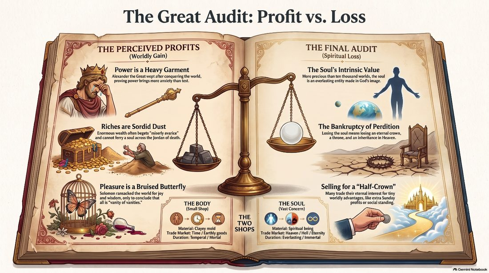
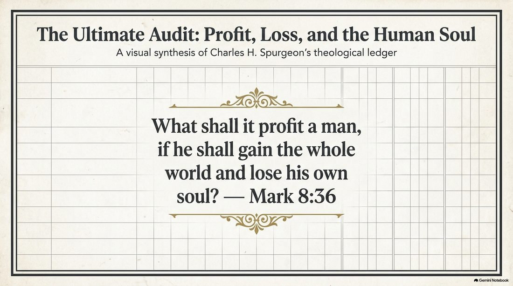
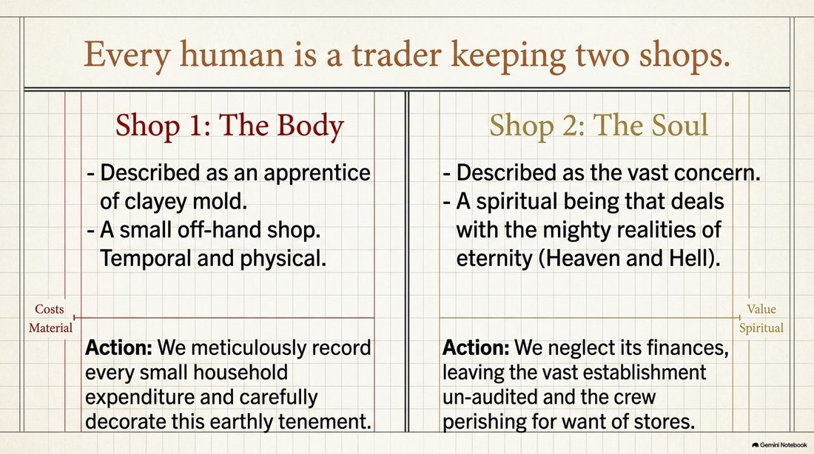
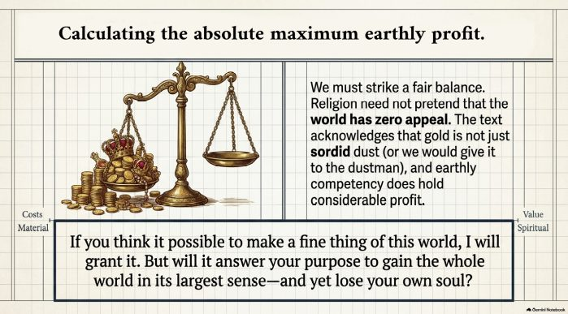
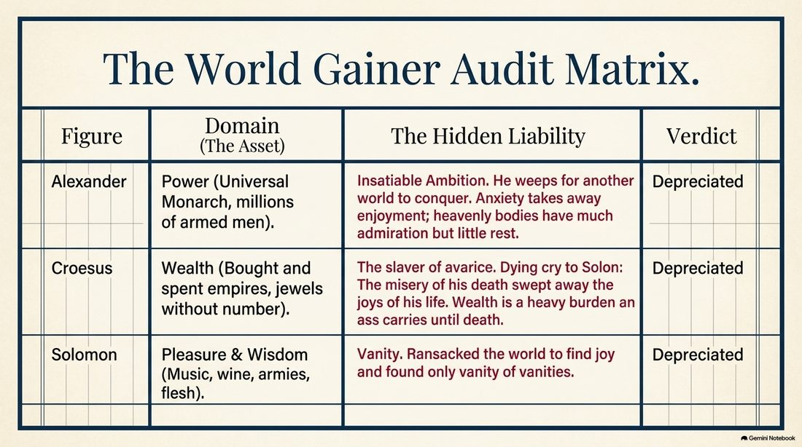
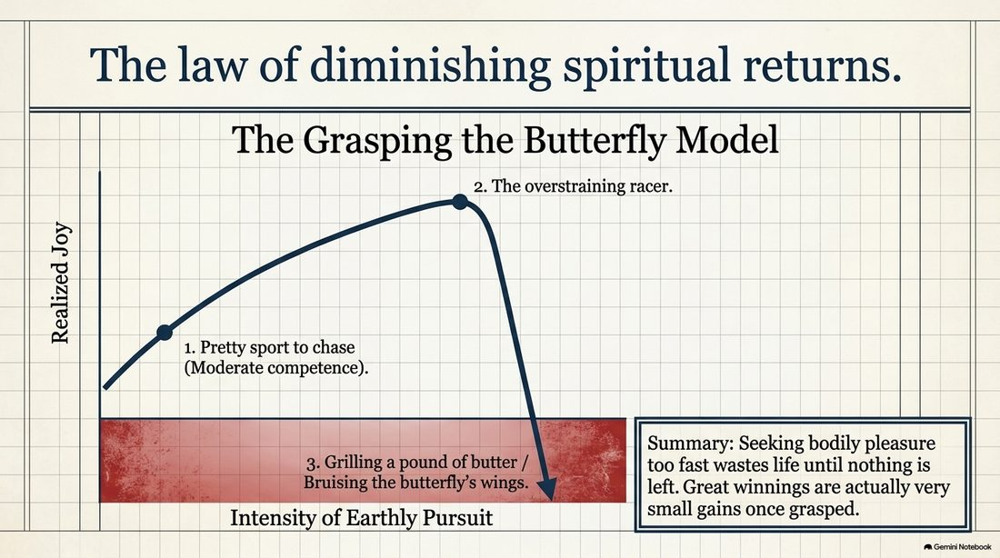
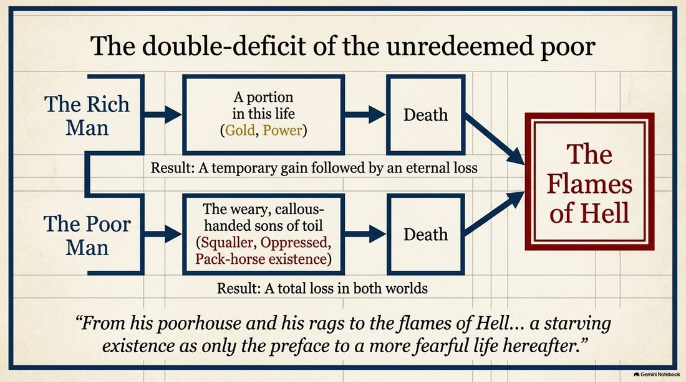
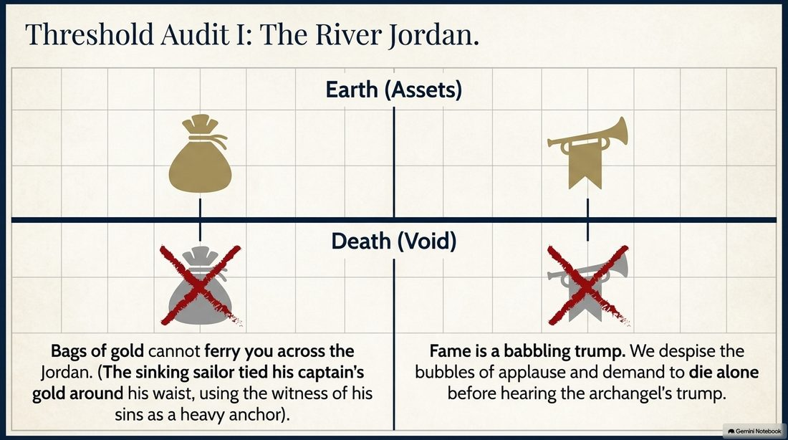
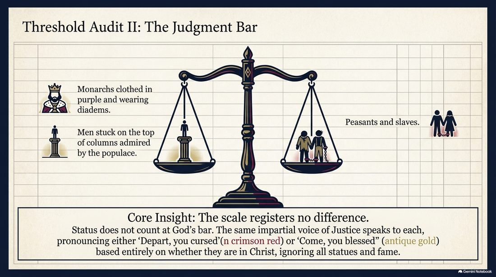
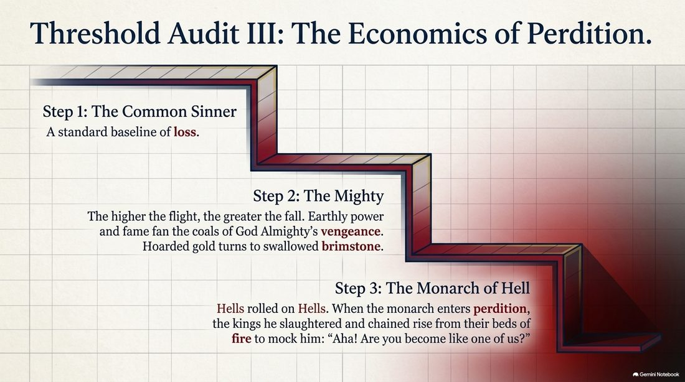
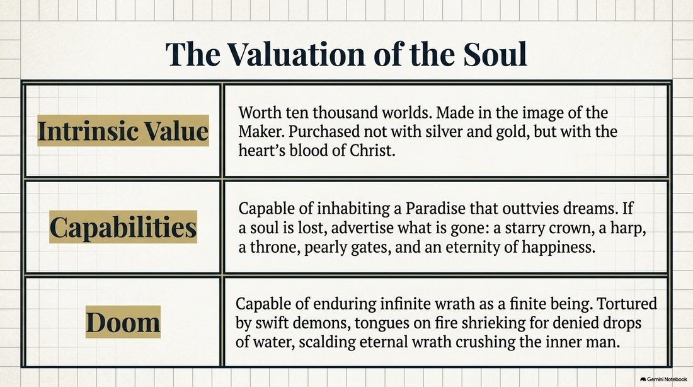
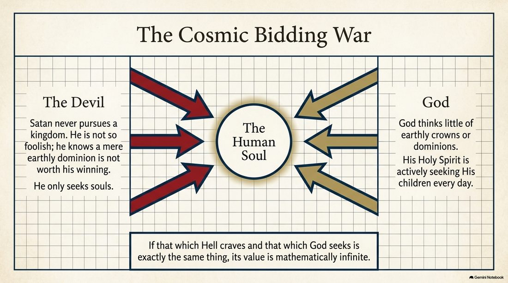
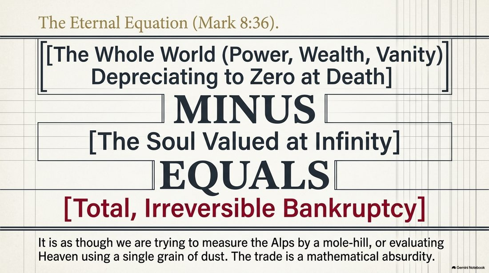
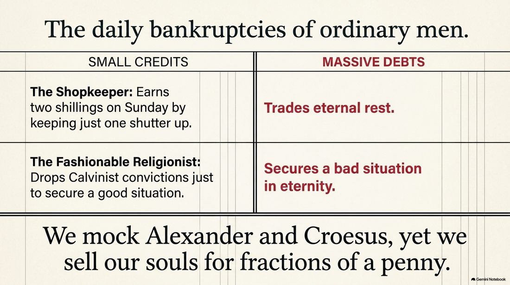
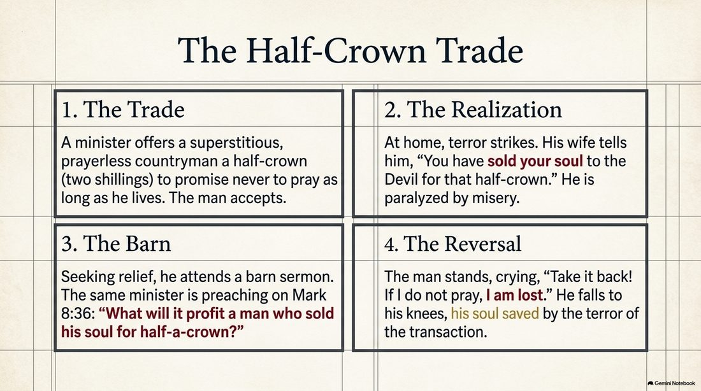
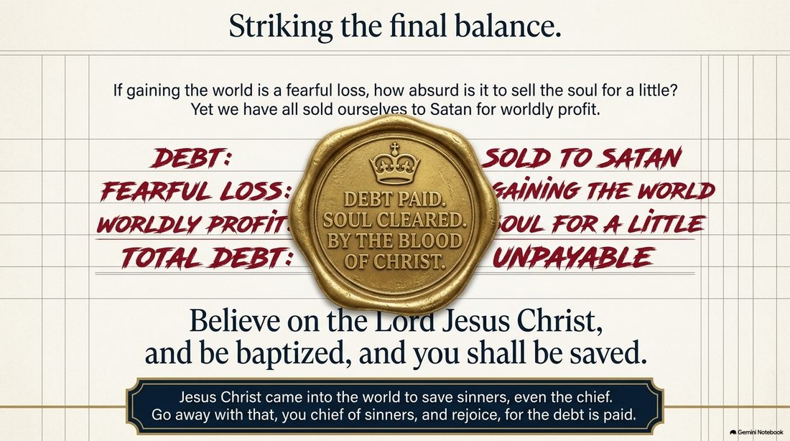
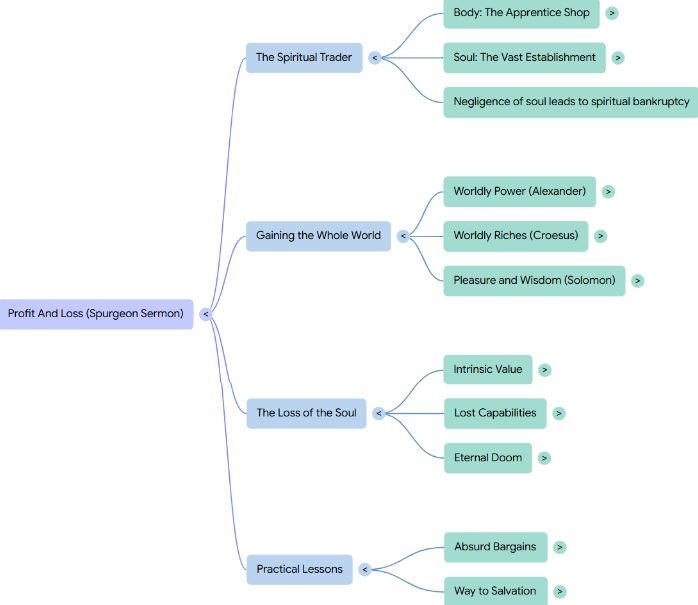
And that strikes the final balance on this series. Two decisions. A third thing — your motives. The team’s share of the reward. And now the Prince of Preachers running the ultimate audit. The whole series lives at The Soul: The Series. Guard your soul — it is the only thing you truly own.
Comments